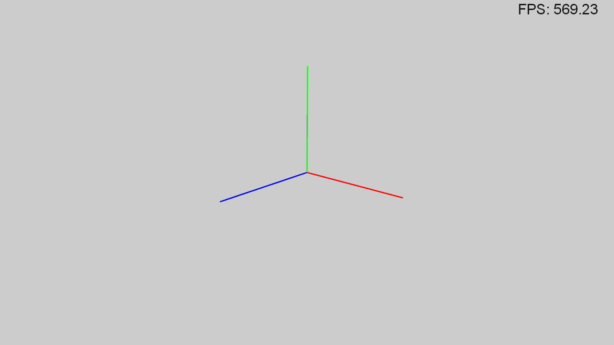
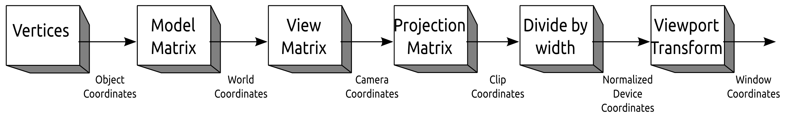
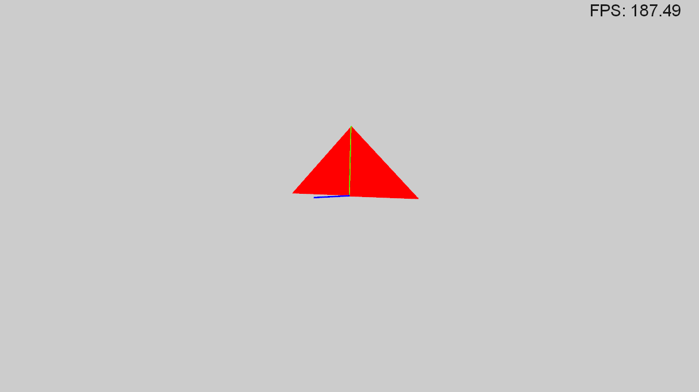

Practical 01 - A quick & dirty introduction to OpenGL
This first practical is divided into two parts: tutorials and exercices. Tutorials gradually present the framework used in the practicals while the exercices are about the basic of the graphics library standard, OpenGL.
Along the practical we put notes about the graphics pipeline and links to the different API's documentation. We strongly advise you to explore these links as often as possible and come back to them as many times as you need.
Below, you can find links to different API's documentations that you will certainly use along the tutorials. Don't worry about it right now, you will come back to them later.
Finally, a few words about the color chart:
Bash codeC++ (CPU code)GLSL (GPU code)Contains warnings.
Contains informations.
Tutorial 1: Build and launch the practical framework.
Download and extract the source code for this practical here.
In case you work on the ENSIMAG computers, source the script gcc493.sh. It will load some environment variables to grant you access to a more modern C++ compiler (that is able to deal with the C++11 norm).
source gcc493.shCompile the external libraries as follows:
cd extlib/
make
In order to speed up the compilation, you can specify to the make
command how many threads to use. A good number of thread is typically the number of CPU cores you have,
e.g. if you have an 8 core CPU type make -j8.
Then, go back in the root directory to use the CMake build system we set for you:
mkdir build
cd build
cmake ../
make
These commands create a build/ directory that will contain all files created to build the executable.
Calling cmake ../ will use the CMakeLists.txt file
at the root directory to setup the build system and automatically generate a Makefile.
Whenever you add new source files in the src/ or include/ directories,
you need to call again cmake ../ in the build/ directory
to use them for building the executable. The executable is named main ;
it should be created (by typing make) and executed in the build/ directory.
Now, launch the produced executable:
./mainYou should get something like this:
Hello WorldTutorial 2: Window and main loop
Generally, a window does several things:
- It initializes an OpenGL context.
- It handles events such as mouse or keyboard events.
- It allows to display on screen what we have drawn in a frame.
In these practicals, the window is wrapped in the Viewer class.
Let's edit the main function in the file src/main.cpp. First, include the header of the Viewer class.
#include "./../include/Viewer.hpp"Then, instanciate a viewer in the main function of your program.
int width=1280; //Width of the window (pixel)
int height=720; //Height of the window (pixel)
Viewer viewer(width, height);Finally, display the window.
//Display the window and its associated framebuffer
viewer.display();At this point, if you launch the program, a window should appear and suddenly disappear. The missing ingredient is what is called the main loop of the application. Depending on the application purpose (game, simulation, rendering) the main loop can have different names but it always do the same thing:
- it handles events such as mouse and keyboard events.
- it draws content in a frame buffer.
- it displays the content of this frame buffer on the window.
while( viewer.isRunning() )
{
viewer.handleEvent();
viewer.draw();
viewer.display();
}When you launch the executable, you should now have something like this:
Now it's time to draw something in that window.
Tutorial 3: Renderable
The Renderable class simply depicts an object
that can be added to the Viewer so that it will be drawn on the window.
In practice, the Viewer class contains a list of Renderable.
When calling the Viewer::draw() function,
it loops over the list of Renderable and draws each of them.
We will instanciate objects to create our scene. These operations could be written inside the following function:
static void initialize_scene( Viewer& viewer )
{
//create your renderables and shader programs
//and add them to the viewer
}
First, include the following headers in the file src/main.cpp.
#include "./../include/ShaderProgram.hpp"
#include "./../include/FrameRenderable.hpp"Second, instanciate a shader program that will be used to draw the Renderable. Add it to the viewer.
//Path to the vertex shader glsl code
std::string vShader = "./../shaders/defaultVertex.glsl";
//Path to the fragment shader glsl code
std::string fShader = "./../shaders/defaultFragment.glsl";
//Compile and link the shaders into a program
ShaderProgramPtr defaultShader = std::make_shared<ShaderProgram>(vShader, fShader);
//Add the shader program to the Viewer
viewer.addShaderProgram(defaultShader);Finally, instanciate a renderable and add it to the viewer.
//Shader program instanciation
//...
//When instanciating a renderable,
//you must specify the shader program used to draw it.
FrameRenderablePtr frame = std::make_shared<FrameRenderable>(defaultShader);
viewer.addRenderable(frame);When launching the executable you should now get something like this:
Note that you can control the view using the mouse. This is done by a Camera class that updates the view matrix for us.
Notes about the graphics pipeline
At this stage of the practical, we will deal with more technicals concepts.
We encourage you to take time to read these notes or come back to them later.
Whatever the chosen graphics library, the transformation pipeline is almost always the same when geometry must be rendered to the screen.
- Object coordinates: Local coordinates of the vertices of an object.
- World coordinates: Local coordinates that have been transformed by the model matrix. The model matrix is a transformation matrix used to place an object in the world. Thus, an object can be re-used and easily placed at different positions.
- Camera coordinates: World coordinates that have been transformed by the view matrix. The view matrix transforms world coordinates in the viewpoint from where it will be observed. It is important to keep in mind that the camera is a symbolic object that never moves, instead it transforms the world coordinates. This is similar to the Dark matter engine in Futurama: «The engines don't move the ship at all. The ship stays where it is and the engines move the universe around it.» --Cubert Farnsworth.
- Clip coordinates: Camera coordinates that have been transformed by the projection matrix. The projection matrix defines the viewing volume (frustum), how the vertex data are projected onto the sceen.
- Normalized coordinates: Clip coordinates normalized between \([-1,1]\).
- Window coordinates: Normalized coordinates converted to pixel coordinates.
For a more detailed description of the transformation pipeline, see here.
OpenGL is a graphics library standard. It is the only open, vendor-neutral, multiplatform graphics standard. Thus, by mastering this standard, you will be able to use it on any Graphics Processing Unit (GPU). This standard is often mistaken with its implementations (which are libraries).
One thing to keep in mind: OpenGL is said to be a state machine. The state is the set of variables on the GPU that are used by the GPU to perform drawing commands. This state is not set with each drawing commands, thus it allows to send fewer data to the GPU. This is important as the bus between the GPU and the CPU is quite slow. Thus, the state has to be modified aside the drawing commands, like global variables.
Keep in mind that two drawing commands issued with the same arguments could lead to different results if the state had been modified in the meantime. You should then be very careful to the state:
- what parts of the state do you need to modify to obtain the expected results?
- what is the default values for some parts of the state?
- what parts of the state need to be restored to its default values to no break later drawing command?
Below, we propose a simplified view of the OpenGL graphics pipeline.
Please refer to the OpenGL reference cards
for a detailed description.
Some steps of the pipeline are programmable by the user through programs called shaders:
- Vertex shader: A vertex is an object that will be grouped with others to form primitives. In OpenGL, you have three kinds of primitives: triangles (3 vertices by primitives), lines (2 vertices by primitives) and points (1 vertex by primtives). Any other primitives need to be built from these three. A vertex is represented by its attributes, such as its position, color and texture coordinates. The purpose of the vertex shader is to perform computations on the attributes of each vertex, such as world to screen transformation.
- Tesselation shader: Evaluate if new vertices should be created (optional; in fact, this is two different shaders).
- Geometry shader: Performs computations on primitive (optional). It can discard a primitive or creates more primitives.
- Fragment shader: Once all the primitives had been defined, the rasterization process takes place. This process discretizes a primitive into fragments. For now, you can think of fragments as the pixel of the screen. The attribute of the vertices (position, color, ...) are linearly interpolated on the fragment and are used to compute the final color of the fragment, for instance using a local illumination model. The fragment shader performs computations on all these fragments, e.g. to compute the local illumination or to texture them.
- Compute shader: Performs general purpose computations on the GPU (aka GPGPU) as a substitute to CUDA or OpenCL. This shader is the only step out of the graphics pipeline and is optional.
In these practicals we will focus on the Vertex shader and the Fragment shader. In contrast with the other shaders, they do not have a default implementation. Therefore, they always must be implemented by the user and provide an output to the next stage of the graphics pipeline.
- The vertex shader should at least provide the position of vertices in the clipped coordinates,
vec4 gl_Position. - The fragment shader should at least provide the color of the fragments resulting from the rasterization stage, a variable with type
vec4
Shaders are written in c-like language called GLSL (OpenGL Shading Language).
Each of them define a function void main()
that will be called on the GPU to process all vertices in the vertex shader and fragments in the fragment shader.
For now, the more important is to understand the following keywords:
-
in/out, respectively used to specify input/output variables of the shader. Please note that if you want to transfer variables from the vertex shader to the fragment shader, then, the outputs of the vertex shader must match the names and the types of the inputs of the fragment shader. -
uniform, used to define global variables that will remain the same for every vertex and every fragment within the same drawing command. Such variables are typically constants of an object to render, like its position, orientation.
And the following built-in variables:
vec4 gl_Position, the clip coordinates position of a vertex, that should be set for every vertex in the vertex shader
Tutorial 4: Create your own Renderable
Shaders
First of all, you need to prepare the vertex and fragment shaders.
In the folder shaders/, create two files "flatVertex.glsl" and "flatFragment.glsl".
Vertex shader
As mentionned before, the vertex shader is mostly used to place the vertices of a geometry in the clipped space.
#version 400 //GLSL version, fit with OpenGL version
uniform mat4 projMat, viewMat, modelMat;
in vec3 vPosition;
out vec4 color;
void main()
{
//Transform coordinates from local space to clipped space
gl_Position = projMat*viewMat*modelMat*vec4(vPosition,1);
color = vec4(1,0,0,1); //RGBA color defined in [0,1]
}Fragment shader
The fragment shader in mainly used to define a color for the fragment of the rasterized primitives. The following shader is one of the simplest fragment shader: it only transfers the color of the fragment to the frame buffer. It is important to keep in mind that this color has been linearly interpolated from the colors of the primitive vertices at the fragment position.
#version 400 //GLSL version, fit with OpenGL version
in vec4 color;
out vec4 fragmentColor;
void main()
{
fragmentColor = color;
}Shader program
We just defined what happens in the graphics pipeline.
We now have to focus on the CPU side.
This starts by compiling and linking your shaders into a shader program.
This process has been encapsulated in the
ShaderProgram class.
//Viewer instanciation
//...
//Default shader instanciation
//...
//Compile and link the flat shaders into a shader program
vShader = "./../shaders/flatVertex.glsl";
fShader = "./../shaders/flatFragment.glsl";
ShaderProgramPtr flatShader = std::make_shared<ShaderProgram>(vShader, fShader);
//Add the shader to the Viewer
viewer.addShaderProgram(flatShader);
//Renderable instanciation
//...Create a 3D model
The 3D model is created inside a renderable object. For this tutorial, the files CubeRenderable.hpp and CubeRenderable.cpp have been prepared and will progressively be filled. First, let's prepare the file main.cpp so that the viewer render an instance of CubeRenderable.
//Don't forget the include
#include "./../include/CubeRenderable.hpp"
//...
static void initialize_scene( Viewer& viewer )
{
//...
//Instanciate a CubeRenderable while specifying its shader program
CubeRenderablePtr cube = std::make_shared<CubeRenderable>(flatShader);
//Add the renderable to the Viewer
viewer.addRenderable(cube);
}
The CubeRenderable class contains two members:
- m_positions: the vector of vertex positions that describe the object, on the CPU.
- m_vBuffer: The identifier of the vexter position buffer on the GPU that stores the positions.
As mentionned above, positions are stored as a vector of 3D positions. A vector is c++ collection from the standard library, you can find further details here. Positions are represented as an array of three float values. Many libraries exist to manipulate this very basic data structure. In the practicals, we chose to use the GLM library.
The class also contains two inherited members from the Renderable abstract class.
- m_shaderProgram: A smart pointer to the shader program used to render the Renderable.
- m_model: A model matrix to place the object in world space.
The first thing to do is to define a 3D geometry and a default world transformation.
This is done in the constructor of CubeRenderable:
CubeRenderable::CubeRenderable(ShaderProgramPtr shaderProgram)
: Renderable(shaderProgram)
{
//Build the geometry: just a simple triangle for now
m_positions.push_back( glm::vec3(-1,0,0) );
m_positions.push_back( glm::vec3(1,0,0) );
m_positions.push_back( glm::vec3(0,1,0) );
//Set the model matrix to identity
m_model = glm::mat4(1.0);
}
A common beginner mistake is to recompute the object geometry at every frame
(for example, in the do_draw() function).
As this geometry does not change, there is no need to recompute it.
Thus, computing only one time in the constructor is the right way to do it.
Then, the geometry is sent to the GPU in an allocated memory stamp that is called buffer. As in classic CPU programmation, the buffer is first declared, then memory is allocated and data are assigned to it.
OpenGL commands all start with the gl prefix.
Such commands can fail, because the state is incoherent with what you are trying to do or because you sent wrong parameters.
These errors are silent: no exception is thrown, no log entry is displayed.
Thus, debugging an OpenGL program can quickly become a hassle.
In order to ease the debugging process, we provide a c++ macro glcheck( ... )
(look at the documentation).
Be sure to use this macro for ALL your OpenGL command.
If you are concerned about the runtime overhead such a macro would cause,
be assured, the macro does nothing when the code is compiled in release mode.
In these instructions, we will omit glcheck(...), in order to improve the readability.
//Still in the constructor. Following previous code.
//Create a new buffer identifier
//This is the "name" of a pointer variable on the GPU)
glGenBuffers(1, &m_vBuffer);
//Bind the buffer to the GL_ARRAY_BUFFER binding point
//This is a place to perform vertex attributes operations)
glBindBuffer(GL_ARRAY_BUFFER, m_vBuffer);
//Transfer data to our new buffer thanks to this binding point
//This function resize the buffer to the requested side
glBufferData(GL_ARRAY_BUFFER, m_positions.size()*sizeof(glm::vec3), m_positions.data(), GL_STATIC_DRAW);
Finally, never forget to release the buffer in the destructor.
CubeRenderable::~CubeRenderable()
{
glDeleteBuffers(1, &m_vBuffer);
}
At this point, CubeRenderable creates the geometry of a triangle
and sends it to the GPU. However, there is no drawing command yet to render
this geometry using a shader program. This is done in the inherited function
do_draw() of the Renderable class.
In this function, all the inputs of the shader program have to be set. For that purpose, the internal format of the GPU vertex attribute buffers are specified and explicitely linked to the GLSL code of the shaders. Once this is done, the drawing command can be issued. Looking at the GLSL code of the so-called flatShader, the inputs are:
- projMat: The projection matrix. This is handled by the Viewer's camera.
- viewMat: The view matrix. This is handled by the Viewer's camera.
- modelMat: The model matrix. We need to sent it to the GPU and link it.
- vPosition: The vertex position. We need to link it.
CubeRenderable::do_draw()
{
//Get the identifier (location) of the uniform modelMat in the shader program
int modelLocation = m_shaderProgram->getUniformLocation("modelMat");
//Send the data corresponding to this identifier on the GPU
glUniformMatrix4fv(modelLocation, 1, GL_FALSE, glm::value_ptr(m_model));
//Get the identifier of the attribute vPosition in the shader program
int positionLocation = m_shaderProgram->getAttributeLocation("vPosition");
//Activate the attribute array at this location
glEnableVertexAttribArray(positionLocation);
//Bind the position buffer on the GL_ARRAY_BUFFER target
glBindBuffer(GL_ARRAY_BUFFER, m_vBuffer);
//Specify the location and the format of the vertex position attribute
glVertexAttribPointer(positionLocation, 3, GL_FLOAT, GL_FALSE, 0, (void*)0);
//Draw the triangles
glDrawArrays(GL_TRIANGLES,0, m_positions.size());
//Release the vertex attribute array
glDisableVertexAttribArray(positionLocation);
}
When launching the executable, you should get something like this:
Initialization - Constructor
//Create buffers on the GPU and returns its ID
//The ID is similar to a pointer name in CPU code
glGenBuffers(...);
//Activate a buffer: Next operations will occur on this buffer
//Specify that data on the buffer are attributes of vertex
glBindBuffer(GL_ARRAY_BUFFER, ...);
//Allocate the buffer memory and transfer data from CPU to GPU
glBufferData(GL_ARRAY_BUFFER, ...);Runtime - do_draw()
//Enable
//Activate the attribute array at this location
glEnableVertexAttribArray(...);
//Activate a buffer: Next operations will occur on this buffer
//Specify that data on the buffer are attributes of vertex
glBindBuffer(GL_ARRAY_BUFFER, ...);
//Specify the location and the format of the vertex attribute
glVertexAttribPointer(...);
//Draw openGL primitives
glDrawArrays(GL_TRIANGLES,...);
//Release the vertex attribute array
glDisableVertexAttribArray(...);
Destruction - Destructor
//Delete the buffers
glDeleteBuffers(...);Exercice 1: Adding new vertex attributes
- Modify flatVertex.glsl so that it also takes color as vertex attribute.
- In CubeRenderable, add a list of colors for the vertices.
- In CubeRenderable, send the colors to the GPU and link them with the shaders.
Exercice 2: Geometry without indexing
Geometric primitives, i.e. points, lines, and triangles, are represented using positions. Very often, some adjacent primitives have vertices that share a common 3D position. In such a case, it would be helpful to share the same vertex between the different primitives instead of duplicating that vertex. This is achieved by indexing: the index of a vertex (its order of appearance in vertex buffers) is used to describe primitives. Then, for every primitives using a particular index, the vertex attributes (position, color, normal, ...) of the vertex at that index are re-used.
In OpenGL, indexing only means adding a new buffer that will contain the vertex indices
to use to build the primitives we want to render. This buffer will be bind on the
GL_ELEMENT_ARRAY_BUFFER target.
This drawing command is changed to a version that will use the index buffer.
See the code below for implementation detail:
Initialization - Constructor
//For position, color and index
glGenBuffers(...);
//For position and color buffer
glBindBuffer(GL_ARRAY_BUFFER, ...);
glBufferData(GL_ARRAY_BUFFER, ...);
//For index buffer
glBindBuffer(GL_ELEMENT_ARRAY_BUFFER, ...);
glBufferData(GL_ELEMENT_ARRAY_BUFFER, ...);
Runtime - do_draw()
//For position and color
glEnableVertexAttribArray(...);
glBindBuffer(GL_ARRAY_BUFFER, ...);
glVertexAttribPointer(...);
//For index
glBindBuffer(GL_ELEMENT_ARRAY_BUFFER,...);
//Draw openGL primitives
glDrawElements(GL_TRIANGLES,...);
//For position and color
glDisableVertexAttribArray(...);
Destruction - Destructor
//For position, color and index
glDeleteBuffers(...);- In CubeRenderable, create the geometry of a cube without indexing.
- Assign one color to each triangle that compose the cube.
- How many triangles do you need? How many vertices?
Exercice 3: Geometry with indexing
Copy CubeRenderable in a new renderable called IndexedCubeRenderable and modify it so that it uses indexing.
- Modify the list of positions and create a list of indices
- Use only one color per vertex
- Send the indices to the GPU and link them with the shaders
- How many triangles do you need ? How many vertices ?
Exercice 4: Basic transformation
- In main.cpp, instanciate a CubeRenderable and an IndexedCubeRenderable.
- Use the following functions to position the cubes next to each other in the scene.
- Use the following functions to deform one of the cube and rotate the other one.